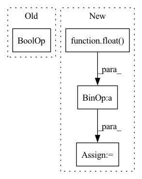

Pattern ID :35097
Before Change
// Dmain: Maximize logits for real images.
// Dr1: Apply R1 regularization.
if do_Dmain or do_Dr1:
name = "Dreal_Dr1" if do_Dmain and do_Dr1 else "Dreal" if do_Dmain else "Dr1"
real_img_tmp = real_img.detach().requires_grad_(do_Dr1)
real_logits = self.run_D(real_img_tmp, real_c, sync=sync)After Change
loss_numpy["loss_Gmain"] = loss_Gmain.cpu().detach().numpy()
loss_G = loss_Gmain
loss_G = loss_G * float( gain)
loss_G.backward() // 咩酱：gain即上文提到的这个阶段的训练间隔。
// Gpl: Apply path length regularization.
if do_Gpl:In pattern: SUPERPATTERN
Frequency: 3
Non-data size: 4
Instances Fragment ID: 100169912
Project Name: miemie2013/miemiegan
Commit Name: fbc8738996ce75111be885ba7ac313d85969a2b8
Time: 2022-02-25
Author: 53960695+miemie2013@users.noreply.github.com
File Name: mmgan/models/architectures/styleganv2ada_model.py
M Class Name: StyleGANv2ADAModel
N Class Name: StyleGANv2ADAModel
M Method Name: accumulate_gradients(8)
N Method Name: accumulate_gradients(8)
M Parent Class: torch.nn.Module
N Parent Class: torch.nn.Module
M File Name: mmgan/models/architectures/styleganv2ada_model.py
N File Name: mmgan/models/architectures/styleganv2ada_model.py
M Start Line: 138
M End Line: 260
N Start Line: 143
N End Line: 262
Before Change
wandb.log(
{"return": mean_return, "Accepted Exp Pct": accepted_exp_pct}
)
if step % save_interval == 0 and save_to_disk :
agent.save(save_dir)
if save_to_disk:After Change
num_envs = _get_parallel_envs(train_env)
num_eval_envs = _get_parallel_envs(test_env)
best_eval = -float("inf")
if save_to_disk or log_to_disk:
save_dir = make_process_dirs(name, base_save_path)
if log_to_disk: Fragment ID: 100169915
Project Name: jakegrigsby/super_sac
Commit Name: 82f3ab05d90aa6d100d2772e4b2ec7f098a8f83f
Time: 2021-12-26
Author: jcg6dn@virginia.edu
File Name: super_sac/main.py
M Class Name: AnonimousClass
N Class Name: AnonimousClass
M Method Name: super_sac(65)
N Method Name: super_sac(65)
M Parent Class:
N Parent Class:
M File Name: super_sac/main.py
N File Name: super_sac/main.py
M Start Line: 264
M End Line: 557
N Start Line: 108
N End Line: 564
Before Change
"training_time": time_elapsed,
}, is_best)
// stop training once reach desired accuracy
if args.desired_acc and best_acc1 >= args.desired_acc :
mins, secs = divmod(time_elapsed, 60)
hrs, mins = divmod(mins, 60)
print("Reached acc of: {:6.2f}\n"After Change
criterion = nn.CrossEntropyLoss().cuda(gpu)
// Scale learning rate based on global batch size
args.lr = args.lr * float( args.batch_size * args.ngpus_per_node * args.world_size) / 256.
optimizer = torch.optim.SGD(model.parameters(), args.lr,
momentum=args.momentum, Fragment ID: 100169904
Project Name: richardkxu/distributed-pytorch
Commit Name: b5d0793a1bac4df6a31ab0dd1959baee4ab12809
Time: 2020-02-06
Author: richardkxu@gmail.com
File Name: imagenet_ddp_mixprec.py
M Class Name: AnonimousClass
N Class Name: AnonimousClass
M Method Name: main_worker(2)
N Method Name: main_worker(3)
M Parent Class:
N Parent Class:
M File Name: imagenet_ddp_mixprec.py
N File Name: imagenet_ddp_mixprec.py
M Start Line: 93
M End Line: 255
N Start Line: 106
N End Line: 226